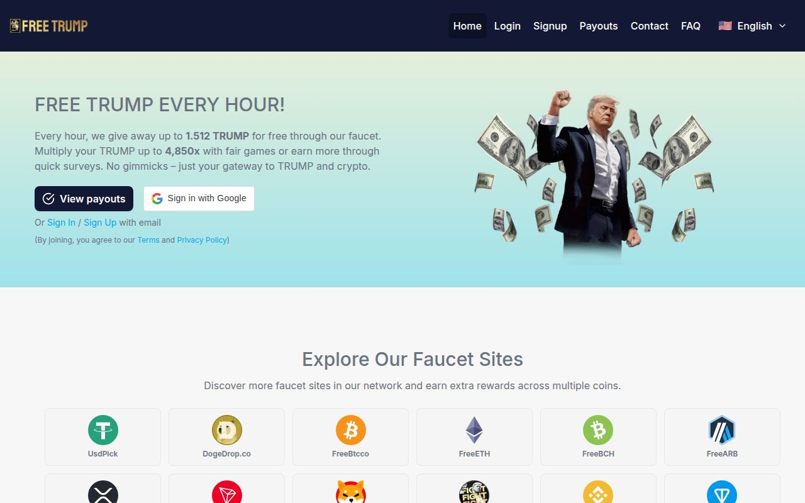
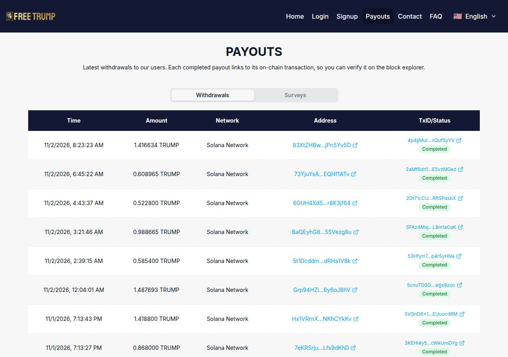

FreeTrump is a crypto faucet that lets you claim TRUMP, a Solana meme token, once an hour after solving a captcha. The headline is "up to 1.512 TRUMP" per claim, about $2.50 at the latest price we found, but its own FAQ gives a normal base-level claim as 0.00015 TRUMP, and the bigger rewards depend on how much you wager in its games. The minimum withdrawal is 0.5 TRUMP, so a casual claimer takes months to reach it. Its payouts page links every withdrawal to a public transaction, which is a real plus. Treat it as a low-effort extra, and stay away from the gambling side.
Quick Facts
How we reviewed it
We have not been paid by FreeTrump and this page has no referral link. Everything below comes from FreeTrump's public home, FAQ and payouts pages, CoinGecko's TRUMP price page, and public reviews of sister sites, all checked on 2 November 2026. We have not claimed over a long period, so this review carries no score and no earnings claims. The screenshots are our own captures of the public pages, and the minimum-withdrawal timing is arithmetic on the site's published figures.
What is FreeTrump?
FreeTrump (freetrump.in) is one of a family of single-coin faucets run by the FaucetMatrix team, with sister sites for Bitcoin, Ethereum, Dogecoin, USDT and others. This one pays in TRUMP, the Solana-based meme token. You sign in with Google or email, claim every hour, and can also do partner surveys, play "provably fair" games and refer friends.

What the Faucet Really Pays
Three numbers on FreeTrump's own pages don't sit comfortably together:
- The headline: up to 1.512 TRUMP an hour. At CoinGecko's price of $1.64 (around 31 October 2026) that is roughly $2.48 a claim, or about $59 a day if you could claim at the maximum every hour. No faucet pays that to free users.
- The FAQ: the faucet level depends on your total amount wagered, and the example it gives for a normal base-level claim is 0.00015 TRUMP.
- The minimum: 0.5 TRUMP to withdraw, with a 0.05 TRUMP fee.
At 0.00015 TRUMP an hour, you collect about 0.0036 TRUMP a day. Reaching 0.5 TRUMP would take roughly 139 days of claiming every hour, around the clock. At $1.64 that 0.5 TRUMP is about 82 cents, and a base-level claim is worth a fraction of a cent.
The other routes to the minimum are the ones the site pushes: partner surveys through TheoremReach, CPX Research and TimeWall, which can also switch on a 30% faucet boost for 24 hours, and the games. The site doesn't publish the odds or house edge for the games.
Our guide to the real hourly rate of micro-earning shows why this matters: a faucet you must claim 24 times a day for months to reach one withdrawal is a poor use of time unless the claim is automatic.
Payouts: The Good Part
FreeTrump's payouts page lists recent withdrawals with a time, amount, address and a link to the transaction on the Solana block explorer, and says each completed payout can be verified on-chain. On 2 November 2026 it showed ten withdrawals over about fifteen hours, between 0.52 and 1.49 TRUMP each, all marked completed. That is better proof than most faucets give. It doesn't tell you how those users earned the balance (the sizes look more like survey or game winnings than base claims) or how many requests are refused.

The Rules That Cost You Your Balance
- One account per person, one per email. Related accounts are permanently disabled.
- No bots or captcha-solving tools. Auto-claiming means a permanent ban.
- No VPN or proxy. It can mean a ban and loss of all rewards. Users in Russia may use one for non-survey features only.
- Wagering sets your faucet level. The more you play the games, the bigger your hourly claim. That ties the best rewards to gambling.
The games are gambling
Multipliers up to 4,850x and 5% weekly cashback on net losses are casino mechanics. The odds and house edge aren't published, and you can lose what you put in. We don't recommend them for a $1-a-day budget.
Who Runs It?
The site names "FaucetMatrix Team" and links to faucetmatrix.io, with no named people or company. We found no payment proofs or reviews for freetrump.in itself. Trustpilot reviews of sister sites such as freebnb.in and freeeth.in are split: some users say they were paid more than once, and others call the network a scam operation and say balances disappeared on a withdrawal request. Those claims are anonymous and unverified, but they are a reason to test with a small withdrawal first.
Pros and Cons
Pros
- Free to start, with no deposit
- Public payouts page linked to on-chain transactions
- Pays direct to your own Solana wallet
- Low 0.5 TRUMP minimum
- Generous 50% referral share on faucet claims
Cons
- Base-level claims are worth a fraction of a cent
- "Up to" rewards are tied to wagering
- Game odds and house edge not published
- No named team, mixed reviews of sister sites
- Earnings are in a volatile meme token, down about 98% from its all-time high
- No FaucetPay or other wallet option
Who FreeTrump Suits
It might suit you if you already have a Solana wallet, enjoy filling a spare minute with an hourly claim, and will do the surveys but skip the games.
It does not suit you if you want a steady $1 a day, prefer FaucetPay, or are tempted by gambling.
Tips if You Try It
- Check the actual claim size on your first day before deciding if it is worth your time.
- Skip the games. Nothing published lets you check the odds.
- Use one account and no VPN. A ban costs your balance.
- Test a first withdrawal early as soon as you pass 0.5 TRUMP, and check it on the block explorer.
- Withdraw regularly. Don't leave a balance sitting on any faucet.
For a faucet that pays through FaucetPay in several coins, see our FireFaucet review and the FaucetPay guide.
Final Verdict
Verdict: real payouts, but a slow faucet that leans on gambling
FreeTrump proves its withdrawals on-chain, which many faucets never do. But its own FAQ puts a base claim at 0.00015 TRUMP, the big "up to" rewards depend on wagering, and the operator is an anonymous network with mixed reviews. Use it as a side project at most, withdraw early, and put your daily time into the platforms below.
Where to Put Your Time Instead
These are our top-rated platforms that need no deposit. Each links to our full review.
- SnazzyPTC: our top pick, a no-deposit PTC paying in BUCK on Solana.
- Prolific: paid academic studies and surveys.
- Respondent: longer, better-paid research interviews.
- Swagbucks and Freecash: offer and survey sites with low cash-out limits.
- TopCashback and Brave: earn from shopping you already do and from browsing.
- FaucetCrypto and FireFaucet: daily faucet claims to a free FaucetPay wallet.
- Honeygain: passive bandwidth sharing.
New to all this? Start with the best micro-task sites of 2026.
Sources
All checked on 2 November 2026.
Related Reviews
Was this review helpful?